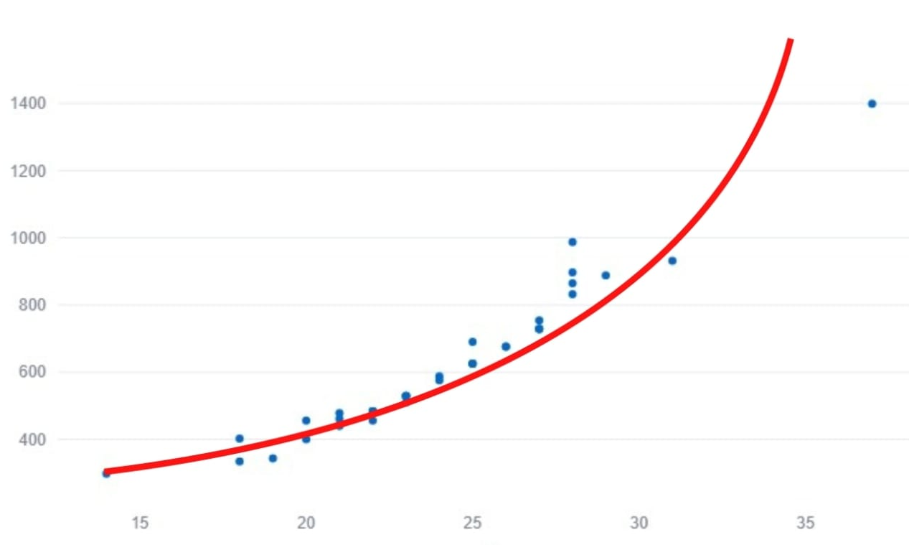
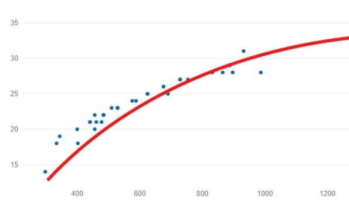
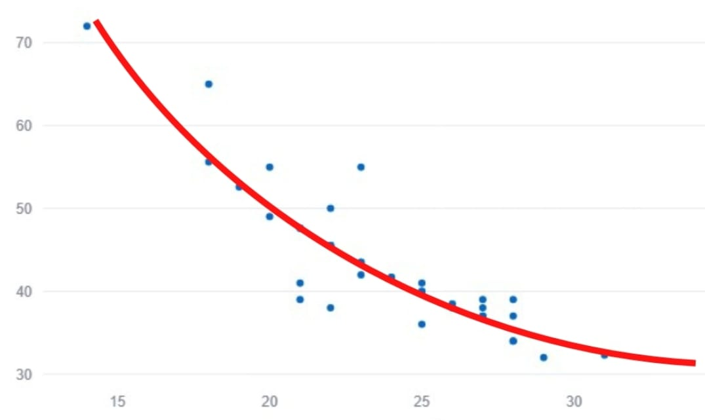
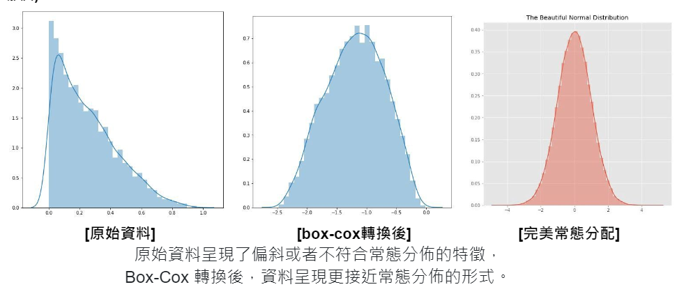

問題解決
迴歸分析中須滿足的四大假設：
1、獨立性(Independence)★★★★★
2、線性關係(Linearity)★★★★☆
3、同質變異性(Equal Variance)★★★☆☆
4、常態性(Normality)★★★☆☆
補救措施
1、獨立性(Independence)不滿足
(1)嘗試調整模型：納入和應變量有相關但遺漏的變數，以減少可能導致獨立性不滿足的因素。
(2)時間序列資料的差分：當資料是時間序列資料且存在自相關（autocorrelation），可以考慮對資料進行差分，使之更加平穩。
2、線性關係(Linearity)不滿足
(1)當常態與同質變異性皆滿足時，可以對Xi進行轉換，使模型滿足線性假設。
a. 當散佈圖呈現下圖曲線，可把Xi轉換為Xi2。
b. 當散佈圖呈現下圖曲線，可把Xi轉換為log10Xi。
c. 當散佈圖呈現下圖曲線，可把Xi轉換為1/Xi。
(2)其他情況下遇到非線性模型的話，可以嘗試下列兩種解決方法：
a. 最近鄰迴歸分析 (KNN Regression)：根據鄰近觀測值的平均值來預測新的數值，建議在維度較低（自變數較少）的情況下使用。
b. 支援向量機 (Support Vector Machine, SVM)：通常用在高維度的情況下可以進行嘗試。
［註］以上只是在通常的情況下，實際情況下還需要視資料型態來做調整。
3、同質變異性(Equal Variance)不滿足
(1)加權最小平方法（Weighted Least Squares, WLS）
WLS通常用於處理異質變異性的情況，通過對觀測值進行加權，使得不同觀測值的變異性被納入考慮，從而獲得更準確的估計；其中常見的加權權數有殘差絕對值與殘差平方。
(2)異方差穩健迴歸（Heteroscedasticity Robust Regression）
使用異方差穩健的OLS估計來獲得穩健的迴歸係數估計值。此方法會根據異方差結構進行估計，從而獲得更可靠的結果。
(3)變異數穩定轉換（Variance Stabilizing Transformation）
通過數據轉換方法，如對數轉換、平方根轉換等，使不同組別的變異性更接近，從而滿足同質變異性的假設。
［註］在違反同質變異性時，請優先考慮使用本產品提供的WLS方法。如果WLS不適用或效果不佳，再嘗試其他轉換方式。
4、常態性(Normality)不滿足
(1)Bootstrap法：
通過從原始數據中反覆抽樣來建立抽樣分佈，然後使用這些抽樣分佈來估計參數的標準誤和信賴區間。特別是在模型顯著的情況下，可以幫助處理非正態分佈、異方差、樣本大小不足等問題，使得參數估計更加穩健。
(2)Box-Cox轉換：
通過引入一個參數λ，Box-Cox轉換可以將數據轉換成不同的形式，包括對數轉換、平方根轉換等，以使數據更符合常態分佈的假設。
［註］Box-COX轉換也有可能可以解決同質變異的問題。
(3)穩健迴歸（Robust Regression）：
一種對抗數據中存在異常值或極端值的迴歸方法。與普通的OLS迴歸相比，魯棒迴歸對異常值的影響更加穩健，通常使用分位數回歸或者M-estimators等方法來實現。
(4)非參數方法：
不依賴於對數據分佈的具體假設，而是通過排列組合或者核密度估計等方法來進行估計；由於對數據的分佈做出較少的假設，因此在處理非正態數據時具有一定的優勢。
5、線性和常態性不滿足
考慮增加自變數的多項式項目以處理線性假設的違反，且同時對應變數或自變數進行轉換，例如對數轉換，解決兩種假設問題。
［註］不能保證完全解決線性和常態性假設的違反；增加多項式項目可能會增加模型的複雜性，甚至發生多重共線性的問題。
6、線性和同質變異性不滿足
考慮增加自變數的多項式項目以處理線性假設的違反，且使用異方差穩健迴歸方法來處理同質變異性的問題。
［註］不能保證完全解決線性和同質變異性假設的違反；增加多項式項目可能會增加模型的複雜性，甚至發生多重共線性的問題。
7、(其他問題)離群值
本研究中不主動採取移除離群值的方式，因為由於研究目的不同，離群值不一定是無用資料，但使用者可依自身經驗判定處理方式。
8、(其他問題)多重共線性
(1)減少相關自變數的數量：
當自變數之間存在高度相關性時，可以通過從模型中刪除一些自變數來減少共線性。通常會保留與目標變量高度相關的自變數，並移除與其他自變數相關性較高的那些。
(2)使用主成分分析（PCA）
一種降維技術，可以將原始的自變數轉換為一組無關的主成分，這些主成分是原始變量的線性組合，彼此之間不存在相關性。然後，可以僅使用與目標變量高度相關的主成分作為模型的自變數，從而減輕多重共線性的問題。